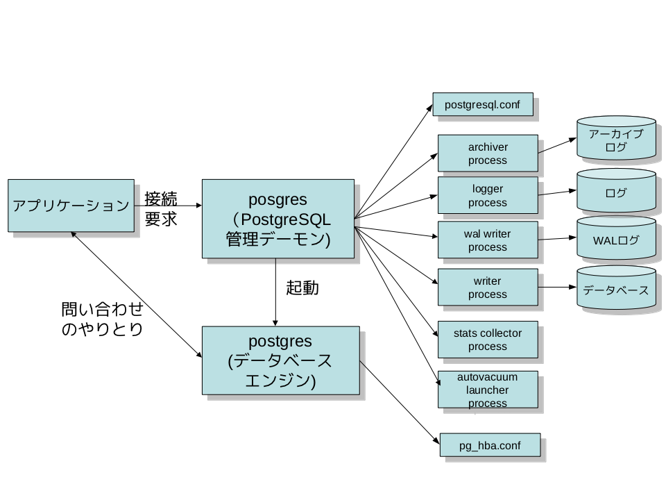
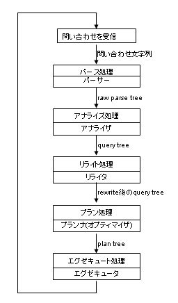

<!DOCTYPE html PUBLIC "-//W3C//DTD XHTML 1.0 Transitional//EN" "http://www.w3.org/TR/xhtml1/DTD/xhtml1-transitional.dtd"><html xmlns="http://www.w3.org/1999/xhtml" xml:lang="ja" lang="ja" dir="ltr">
<head>
<meta http-equiv="content-type" content="text/html;charset=iso-2022-jp" />
<link rev=made href="mailto:ishii@sraoss.co.jp" />
<title>PostgreSQLの構造とソースツリー</title>
<body>
<!-- hhmts start -->
Last modified: Mon Oct 24 09:26:22 JST 2011
<!-- hhmts end -->

<h1>PostgreSQLの構造とソースツリー</h1>
<p>
このページでは、PostgreSQLの全体構造と、ソースツリーの概要を説明します。
前提としているバージョンはPostgreSQL 9.1.xです。
ほかのバージョンでは、多少細部が違っているかも知れません。
</p>

<h2>PostgreSQLの利用形態</h2>
<p>
<a href="1.png"></a>
PostgreSQLはいわゆるクライアント/サーバ型のアーキテクチャを採用しています。
PostgreSQLを利用するアプリケーションは、まず定められたプロトコルにしたがい、INETまたはUnixドメインソケットを通じてPostgreSQLのサーバに接続しなければなりません。
</p>

<p>
「スタンドアローン・バックエンド」という利用形態もあり、PostgreSQLのデータベースエンジンを直接起動することも可能ですが、データベース・クラスタ(他のデータベースでは「インスタンス」と呼ばれるものに相当)の初期化か、緊急メインテナンス時にしか使用されないので、普通はクライアント/サーバでPostgreSQLを利用すると思ってかまいせん。
</p>
<p>
PostgreSQLでは、クライアントを<b>フロントエンド</b>(frontend)、サーバを<b>バックエンド</b>(backend)と呼びます。
バックエンドは複数のプロセスから構成されていますが、それについてはこの後で説明します。
</p>
<p>
フロントエンドとバックエンドの通信プロトコルは、PostgreSQLのドキュメント「フロントエンド/バックエンドプロトコル」に詳しく書かれています。
基本的には問い合わせ(SQL文)をフロントエンドからバックエンドに送信し、その結果が複数のパケットに分かれてバックエンドからフロントエンドに返ってくるような仕掛けになっています。
</p>
<p>
接続の開始処理やエラー処理など、いろいろなことをやらなければならないので、PostgreSQLのプロトコル処理は結構複雑になります。
これをすべてのフロントエンドで実装するのは大変なので、C言語で書かれた<b>libpq</b>という共通ライブラリが提供されており、これを使って簡単にバックエンドとの通信を行うことができます。
PostgreSQLはPerlやPHPなど、C言語以外のプログラミング言語をサポートしていますが、これらは内部でlibpqを呼び出しています。
</p>
<p>
libpqを使わずに独自にPostgreSQLとの通信を行うライブラリもあります。
代表的なものがJavaで、PostgreSQL用のJDBCドライバは、独自にネットワーク通信を行うことにより、libpqに頼ることなく実装されています。
</p>
<p>
一方バックエンドの方は、中心となるのがデータベース処理を実行する<b>データベースエンジン</b>です。
データベースエンジンにはユーザが作成したアプリケーションを実行する機能があります。
この機能を使って、ユーザは柔軟にPostgreSQLの機能を拡張できます。
良く利用されるのは、ほかのデータベースで言うところの「ストアドプロシジャ」で、PostgreSQLでは<b>ユーザ定義関数</b>と呼びます。言語別に以下のようなものが利用できます。
</p>

<table border>
<tr><th>言語</th><th>ユーザ定義関数処理系</th></tr>
<tr>
 <td>C</td><td>C関数</td>
</tr>
<tr>
 <td>SQL</td><td>SQL関数</td>
</tr>
<tr>
 <td>OracleのPL/SQLに似た独自言語</td><td>PL/pgSQL</td>
</tr>
<tr>
 <td>Perl</td><td>PL/Perl</td>
</tr>
<tr>
 <td>Python</td><td>PL/Python</td>
</tr>
</table>
</p>
<p>
PostgreSQLでは、ユーザが独自にユーザ定義関数の処理系を定義することができます。
そこで各種言語用のサーバサイドスクリプトがサードパーティーによって提供されています。
主なものとしては、Ruby, Java, PHPなどがあります。
</p>

<h2>PostgreSQLの構造</h2>
<p>
<a href="2.png"></a>
それでは、もう少し詳しくPostgreSQLの構造を見てみましょう。
</p>
<p>
バックエンド側はいくつかのプロセスから構成されています。
</p>
<h3>postgres(常駐プロセス)</h3>
<p>
バックエンドを管理する常駐プロセスです。
"postmaster"とも呼ばれます。
デフォルトではpostgresはUNIXドメインソケットとTCP/IPの5432番のポートをlistenしており、フロントエンドがここに接続するのを待ち受けています
(Windowsなど、一部のプラットフォームではTCP/IPのみ)。
待ち受けるポート番号はPostgreSQLのメイン設定ファイルである<b>postgresql.conf</b>によって変えられます。
</p>
<p>
フロントエンドがpostgresに接続するとfork(2)によって子プロセスを生成します。fork(2)を持たないWindowsプロットフォームでは、
CreateProcess()を使って新たにプロセスを生成します。
この場合はfork(2)と違って自動的に親プロセスのデータを引継げないので、共有メモリを利用して親プロセスのデータを引継ぎます。
</p>

<h3>postgres(子プロセス)</h3>
<p>
子プロセスでは、まずセキュリティポリシーファイルである<b>pg_hba.conf</b>によって接続の可否がチェックされます。
ポリシーにより、特定のIPアドレスやネットワークからの接続を拒否したり、特定ユーザやデータベースのみ接続を許可することもできます。
</p>
<p>
postgresはフロントエンドからの問い合わせを受け取ってはデータベースを検索して結果を返したり、データベースの更新を行ったりします。
更新データは同時に<b>トラザンクションログ</b>(PostgreSQLでは<b>WALログ</b>と呼びます)と呼ばれる特別なファイルに記録され、主に一停電などでコンピュータがダウンし、再起動後データベースの不整合が起きた際にはリカバリ処理を行うために使用されます。
更に適当なタイミングでアーカイブログ領域に移され、リカバリ処理に備えて保存が可能になっています。
また、PostgreSQL 9.0以降では、WALログを他のPostgreSQLに転送することによって、リアルタイムにデータベースの複製を作成する「レプリケーション」機能が使えるようになっています。
これらの処理の一部は次に説明する別プロセスが実行します。
</p>

<h3>その他のプロセス</h3>
<p>
postgres以外にいくつか補助プロセスがあります。
これらはすべて常駐プロセスのpostgresから起動されるプロセスです。
</p>
<h4>

<h4>ライター・プロセス</h4>
<p>
「ライター・プロセス」(writer process)は、共有メモリ上のバッファを最適なタイミングでハードディスクに書出します。
これによって、チェックポイントの際に大量のディスク書き込みが起きてパフォーマンスが劣化することを防ぎ、安定したパフォーマンスが維持できます。
バックグラウンド・ライター・プロセスは一度起動されたら以後常駐しますが、
ずっと動き続けているわけではなく、postgresql.confのbgwriter_delayで規定される時間(デフォルトでは200ミリ秒)休止してはまた動くという動作を繰り返します。
</p>
<p>
ライタープロセスのもう一つの重要な仕事は、<b>チェックポイント</b>処理を定期的に実行することです。
</p>
<p>
チェックポイントは、定期的に共有メモリ上のバッファの内容をデータベースファイルに書出し、メモリとディスクの状態を一致させます。
これによって、システムがクラッシュした際に、WALからのリカバリに要する時間を短縮します。
また、WALが無限に増えるのを防ぎます。
</p>
<p>
チェックポイントはpostgresql.confのcheckpoint_segments、checkpoint_timeoutで指定されるタイミングで自動的に実行されます。
</p>

<h4>WALライタープロセス</h4>
<p>
WALライタープロセス(WAL writer process)は、共有メモリ上のWALバッファを最適なタイミングでハードディスクに書出します。
これによって、バックエンドプロセスが自らWALバッファの書き出しを行なう負担を軽減し、パフォーマンスを向上させます。
また、<b>非同期コミット</b>が有効な場合、一定時間のうちにWALバッファの内容がWALログに書かれることを保証する役割もあります。
</p>

<h4>アーカイバープロセス</h4>
<p>
アーカイバープロセスは、WALログを<b>アーカイブログ</b>に移します。
<b>ベースバックアップ</b>とアーカイブログを保存しておけば、データベースを格納したディスクが完全に破壊されても直近の状態に戻ることができます。
</p>

<h4>統計情報収集プロセス</h4>
<p>
統計情報収集プロセス(stats collector process)は、テーブルへのアクセス回数やディスクへのアクセス回数などの情報を収集するプロセスです。
ここで収集された情報は、autovacuumが利用する他、データベースの管理者が参照してデータベースの管理に役立てるためます。
</p>

<h4>ロガープロセス</h4>
<p>
ロガープロセス(logger process)は、PostgreSQLの活動状態を出力するログ(WALのことではありません)をファイルに書出したり、指定された間隔でローテートさせる処理を行ないます。
</p>

<h4>autovacuum起動プロセス</h4>
<p>
autovacuum起動プロセス(autovacuum launcher process)は、自動VACUMMプロセスの起動を常駐posgresプロセスに依頼します。
自分自身ではVACUMMプロセスの起動は行ないません。これはより信頼性を向上させるためです。
</p>

<h4>wal sender/wal receiver</h4>
<p>
wal senderプロセスは、wal receiverプロセスとともに、PostgreSQLのレプリケーション(streaming replication)を実行するためのプロセスです。
wal senderプロセスは、WALをネットワーク経由で送信し、別なPostgreSQLインスタンスのwal receiverプロセスがそれを受診します。
wal receiverプロセスが動くPostgreSQL(「スタンバイ」と呼ばれます)は、WALを自分のDBに適用にすることにより、送信元のPostgreSQL(「プライマリ」と呼ばれます)とそっくり同じデータベースを作成することができます。
</p>

<h2>バックエンドの処理の流れ</h2>
<p>

次に、データベースエンジンであるpostgresの子プロセスの処理の概要を見てみましょう。
以後このプロセスを<b>バックエンドプロセス</b>ないし、単に<b>バックエンド</b>と呼ぶことにします。
なお、バックエンドのメイン関数は PostgresMain (tcop/postgres.c)です。
<ol>
<li>フロントエンドから送られてきた問い合わせ(SQL文)を受信
<p>

<li>
<p>
SQL文は単なる文字列なので、そのままではコンピュータ処理には向いていません。
そこで内部的に扱いやすい<b>パースツリー</b>(parse tree)の形に変換します。
ここでの処理は「パース処理」と呼ばれ、パース処理を行うモジュールを<b>パーサ</b>(parser)と呼びます。
</p>
<p>
この段階では、文字通り問い合わせ文字列から得られる情報のみを使用します。
したがって、文法的に間違いのない限り、存在しないテーブルをSELECTしようとしてもエラーになりません。
この段階のパースツリーは<b>ローパースツーリー</b>(raw parse tree)とも呼ばれます。
パース処理のエントリポイントは raw_parser (parser/parser.c) です。
</p>

<li>
<p>
パースツリーを解析し、<b>クエリツリー</b>(query tree)に変換します。
このとき、データベースをアクセスして指定されたテーブルが実際に存在するかどうかチェックし、存在すればテーブル名からOIDに変換するなどの処理が行われます。
ここでの処理は<b>アナライズ処理</b>と呼ばれ、アナライズ処理を行うモジュールを<b>アナライザ</b>(analyzer)と呼びます。
なお、PostgreSQLのソースコードでパースツリーと言えば、クエリツリーのことを指すことが多いようです。
アナライズ処理のエントリポイントは parse_analyze (parser/analyze.c) です。
</p>
<li>
<p>
PostgreSQLでは、VIEWやRULEをクエリを書き換えることによって実装しています。
もし必要ならばこの段階でクエリを書き換えます。
ここでの処理は<b>リライト処理</b>と呼ばれ、リライト処理を行うモジュールを<b>リライタ</b>(rewriter)と呼びます。
リライト処理のエントリポイントは QueryRewrite (rewrite/rewriteHandler.c) です。
</p>
<li>
<p>
クエリツリーを解析し、実際に問い合わせを実行するための<b>プランツリー</b>(plan tree)を作成します。
ここでの処理は「プラン処理」と呼ばれますが、もっとも実行時間が短くて済みそうなプランツリーを作成することが非常に大切です。
そのため、この処理は<b>クエリオプティマイズ</b>(query optimize:最適化)ないし単に<b>オプティマイズ</b>と呼ばれることもあります。
こうした処理を行うモジュールを<b>クエリオプティマイザ</b>(query optimizer)ないし、単に<b>オプティマイザ</b>と呼びます。(あるいは<b>プランナ</b>(planner)と呼ぶこともあります)。
プラン処理のエントリポイントは standard_planner (optimizer/plan/planner.c) です。
</p>
<li>
<p>
プランツリーに従い、問い合わせを実行します。
ここでの処理は<b>エグゼキュート処理</b>と呼ばれ、エグゼキュート処理を行うモジュールを<b>エグゼキュータ</b>(executor)と呼びます。
エグゼキュータ処理のエントリポイントは ExecutorRun (executor/execMain.c) です。
</p>
<li><p>実行結果をフロントエンドに送信します。</p>
<li><p>再び1)に戻ります。</p>
</ol>
</p>

<h2>PostgreSQLのソースコード</h2>
<p>
PostgreSQLのおおまかな構造がわかったところで、PostgreSQLのソースコードの構造を見ていきましょう。
</p>
<p>
PostgreSQLが現在の形になったときは20万行ほどだったソースコードは、今では100万行ほどあります。
これほどの量になると、闇雲にコードを読んでも理解するのは難しいでしょう。
そこでまず本稿で大まかなソースコードの構造を理解していただきたいと思います。
</p>
<h3>トップレベル</h3>
<p>
PostgreSQLのソースコードを展開すると、トップレベルには表のようなファイルやディレクトリがあります。
トップレベルでconfigure;make;make installを行なえば、基本的なインストールはすぐにできるようになっています。
実際には、PostgreSQLのソースからのインストールは極めて容易です。
</p>

<table border>
<tr><th>ファイル/ディレクトリ</th><th>説明</th></tr>
<tr>
 <td>COPYRIGHT</td><td>著作権の表示</td>
</tr>
<tr>
 <td>GUNMakefile</td><td>トップレベルのMakefile</td>
</tr>
<tr>
 <td>GUNMakefile.in</td><td>Makefileの雛形</td>
</tr>
<tr>
 <td>HISTORY</td><td>改訂履歴</td>
</tr>
<tr>
 <td>INSTALL</td><td>インストール方法の概略</td>
</tr>
<tr>
 <td>Makefile</td><td>ダミーのMakefile</td>
</tr>
<tr>
 <td>README</td><td>概要の説明</td>
</tr>
<tr>
 <td>aclocal.m4</td><td>config用ファイルの一部</td>
</tr>
<tr>
 <td>config/</td><td>config用ファイルを格納するディレクトリ</td>
</tr>
<tr>
 <td>configure</td><td>configureファイル</td>
</tr>
<tr>
 <td>configure.in</td><td>configureファイルの雛形</td>
</tr>
<tr>
 <td>contrib/</td><td>contributionプログラム</td>
</tr>
<tr>
 <td>doc/</td><td>ドキュメントディレクトリ</td>
</tr>
<tr>
 <td>src/</td><td>ソースディレクトリ</td>
</tr>
</table>
</p>

<p>
PostgreSQLの本体はsrc以下にあります。
</p>
<p>
<table border>
<tr><th>ファイル/ディレクトリ</th><th>説明</th></tr>
<tr>
 <td>DEVELOPERS</td><td>開発者向けの注釈</td>
</tr>
 <td>Makefile</td><td>Makefile本体</td>
</tr>
<tr>
 <td>Makefile.global</td><td>make用の設定値（configureが生成）</td>
</tr>
<tr>
 <td>Makefile.global.in</td><td>configureが使用するMakefile.globalの雛型</td>
</tr>
<tr>
 <td>Makefile.port</td><td>プラットフォーム依存のmake設定値。実際にはmakefile/Makefile.プラットフォームへのリンク（configureが生成）</td>
</tr>
<tr>
<td>Makefile.shlib</td><td>共有ライブラリ用のMakefile</td>
</tr>
<tr>
 <td>backend/</td><td>バックエンドのソース一式</td>
</tr>
<tr>
 <td>bcc32.mak</td><td>Win32ポート用のMakefile(Borland C++用)</td>
</tr>
<tr>
 <td>bin/</td><td>psqlなどのUNIXコマンドのソース</td>
</tr>
<tr>
 <td>include/</td><td>ヘッダファイル</td>
</tr>
<tr>
 <td>interfaces/</td><td>フロントエンドライブラリのソース一式</td>
</tr>
<tr>
 <td>makefiles/</td><td>プラットフォーム依存のmake設定値</td>
</tr>
<tr>
 <td>nls-global.mk</td><td>メッセージカタログ用Makefile用ルール</td>
</tr>
<tr>
 <td>pl/</td><td>プロシージャ言語のソース</td>
</tr>
<tr>
 <td>port/</td><td>プラットフォーム移植用のソース</td>
</tr>
<tr>
 <td>template/</td><td>プラットフォーム依存の設定値</td>
</tr>
<tr>
 <td>test/</td><td>各種テストツール</td>
</tr>
<tr>
 <td>timezone/</td><td>タイムゾーンの実装</td>
</tr>
<tr>
 <td>tools/</td><td>開発用の各種ツール、ドキュメント</td>
</tr>
<tr>
 <td>tutorial/</td><td>チュートリアル</td>
</tr>
<tr>
 <td>win32.mak</td><td>Win32ポート用のMakefile(Visual C++用)</td>
</td>
</table>
</p>

<p>
この中で中心となるのはbackend, bin, interfacesディレクトリです。
backendはバックエンドに対応し、binとinterfacesはフロントエンドに対応します。
</p>
<p>
binには、psqlやinitdb, pg_dumpなどの各種ツールのソースがあります。
interfacesには、PostgreSQLのC言語ライブラリであるlibpq、そしてC言語にSQLを埋め込むことができるecpgコマンドのソースがあります。
</p>
<p>
backendディレクトリの構造を示します。
</p>

<p>
<table border>
<tr><th>ファイル/ディレクトリ</th><th>説明</th></tr>
<tr>
 <td>Makefile</td><td>makefile</td>
</tr>

<tr>
 <td>access/</td><td>各種アクセスメソッド（以下サブディレクトリ）
<br>
common(共通関数)、gin(Generalized Inverted Indexという汎用的な転置インデックスメソッド)、
gist(Generalized Search Tree という汎用的なインデックスメソッド)、
hash(ハッシュインデックス)、heap(ヒープアクセス関数)、
index(インデックスアクセス関数)、
nbtree(Btreeインデックス)、transam(トランザクション処理)
</td>
</tr>
<tr>
 <td>bootstrap/</td><td>データベース初期化（initdbのとき）の処理</td>
</tr>
<tr>
 <td>catalog/</td><td>システムカタログのハンドリング</td>
</tr>
<tr>
 <td>commands/</td><td>SELECT/INSERT/UPDATE/DELETE以外のSQL文を実行する処理</td>
</tr>
<tr>
 <td>executor/</td><td>エグゼキュータ(問い合わせの実行)</td>
</tr>
<tr>
 <td>lib/</td><td>共通関数</td>
</tr>
<tr>
 <td>libpq/</td><td>フロントエンド／バックエンド通信のバックエンド側処理</td>
</tr>
<tr>
 <td>main/</td><td>すべてのpostgres用のメイン</td>
</tr>
<tr>
 <td>nodes/</td><td>パースツリー操作関数</td>
</tr>
<tr>
 <td>optimizer/</td><td>問い合わせオプティマイザ</td>
</tr>
<tr>
 <td>parser/</td><td>SQLパーサ</td>
</tr>
<tr>
 <td>port/</td><td>プラットフォーム依存コード</td>
</tr>
<tr>
 <td>postmaster/</td><td>postmaster(常駐postgres)のメイン</td>
</tr>

<tr>
 <td>replication/</td><td>streaming replication</td>
</tr>

<tr>
 <td>regex/</td><td>正規表現処理</td>
</tr>
<tr>
 <td>rewrite/</td><td>ルールとビュー用の問い合わせ書き換え処理</td>
</tr>

<tr>
 <td>snowball/</td><td>全文検索関連(語幹処理)</td>
</tr>

<tr>
<td>storage/</td><td>共有メモリ、ディスク上のストレージ、バッファなど、すべての1次/2次記憶管理(以下サブディレクトリ)
<br>
  buffer/(バッファ管理)、
file/(ファイルアクセス)、freespace/(Fee Space Map管理)
ipc/(プロセス間通信)、large_object/(ラージオブジェクトアクセス関数)、
lmgr/(ロックマネージャ)、page/(ページアクセス関数)、
smgr/(ストレージマネージャ)
				 </td>
</tr>
<tr>
 <td>tcop/</td><td>postgres(データベースエンジンプロセス)の主要部分</td>
</tr>

<tr>
 <td>tsearch/</td><td>全文検索</td>
</tr>

<tr>
<td>utils/</td><td>様々なモジュール(以下サブディレクトリ)
<br>
adt/(各種組み込みデータ型)、cache/(キャッシュ管理)、
error/(エラー処理関数)、fmgr/(関数管理)、hash/(hash関数)、
init/(データベースの初期化、postgresの初期処理)、
mb/(マルチバイト処理)、misc/(その他)、mmgr/(メモリ管理関数)、
resowner/(問い合わせの間だけ有効なデータ(バッファピンやテーブル ロック)の管理)、
sort/(ソート処理)、time/(トランザクションのMVCC管理)
			  </td>
</tr>
</table>
</p>
<p>
バックエンドなどのヘッダーファイルはまとめてincludeにあります。
backendのディレクトリ構造を反映しているのですが、そのままではなく、基本的にサブディレクトリの下に更にサブディレクトリを設けることはしていません。
たとえば、backendディレクトリの下のutilsの下にはさらにadtなどのサブディレクトリがありますが、ここではそれは省略され、平坦な構造になっています。
</p>

<pre>
access/
bootstrap/
c.h
catalog/
commands/
dynloader.h@
executor/
fmgr.h
foreign/
funcapi.h
getaddrinfo.h
getopt_long.h
lib/
libpq/
mb/
miscadmin.h
nodes/
optimizer/
parser/
pg_config.h
pg_config.h.in
pg_config.h.win32
pg_config_manual.h
pg_config_os.h@
pg_trace.h
pgstat.h
pgtime.h
port/
port.h
portability/
postgres.h
postgres_ext.h
postgres_fe.h
postmaster/
regex/
rewrite/
rusagestub.h
snowball/
stamp-h
storage/
tcop/
tsearch/
utils/
windowapi.h
</pre>
</p>

<h3>ソースコードの歩き方</h3>
<p>
<h4>デバッガを使ってソースコードを追っ掛けてみよう</h4>
<p>
PostgreSQLのような巨大なシステムでは、目でソースコードの流れを追うのは容易ではありません。
そこでお勧めなのが、gdbなどのデバッガを使って実際のコードの実行の流れを追うことです。
デバッガというとしり込みする方もいらっしゃるかもしれませんが、単に実行の流れを追うだけなら非常に簡単です。
</p>
<p>
ただ、そのためには多少準備が必要で、PostgreSQLをデバッグシンボル付でコンパイルしておかなければなりません。通常PostgreSQLを構築する際にconfigureに--enable-debugオプションを追加してください。
また、できればsrc/Makefile.globalを編集し、
<pre>
CFLAGS = -O2 -Wall -Wmissing-prototypes -Wpointer-arith -Wdeclaration-after-statement -Wendif-labels -Wformat-security -fno-strict-aliasing -fwrapv
</pre>
のような行から"-O2"を削除して代わりに"-g"を付けます。
<pre>
CFLAGS = -g -Wall -Wmissing-prototypes -Wpointer-arith -Wdeclaration-after-statement -Wendif-labels -Wformat-security -fno-strict-aliasing -fwrapv
</pre>
とします。
-O2はコンパイラの最適化オプションで、これを有効にすると、コードの実行順序が入れ替わってしまったりしてソースとの対応を追っ掛けるのが困難になることがあるので、外してしまってください。
もちろん、こうして作ったPostgreSQLの実行バイナリは大きくかつ遅いものになるので、本番環境などに適用してはなりません。
あくまで勉強用あるいは解析用に使うPostgreSQLであると理解してください。
</p>

<h4>実際にgdbを使ってみよう</h4>
<p>
今、
<pre>
select 1;
</pre>
という非常に単純なSELECT文を例にとって、実際にgdbを使ってみましょう。
SELECT文を実行すると、エグゼキュータの関数の一つであるExecSelectという関数で停止します。
そこに至るまでにどのような関数が呼ばれているか調べてみましょう。
</p>

<p>
まずPostgreSQLのスーパユーザでログインします。
私の環境ではPostgreSQLをインストールしたユーザがt-ishiiになっていますが、通常はpostgresユーザなどを使うと思いますので、適当に読み替えてください。
</p>
<p>
次に、psqlでデータベースに接続します。その状態でpsコマンドで見ると、
<pre>
$ ps x

3714 ?        Ss     0:00 postgres: t-ishii test [local] idle                   
</pre>

のようなプロセスが見つかると思います。これがバックエンドプロセスです。
他にもいろいろなユーザがPostgreSQLに接続しているとこのようなプロセスが
たくさん表示されて分かりにくいですし、そういう意味でも実験用の環境を用
意した方が良いと思います。
</p>
<p>
gdbを起動し、psで表示されたプロセス番号のプロセスにアタッチします。
<pre>
$ gdb postgres 3714
GNU gdb (GDB) 7.2
Copyright (C) 2010 Free Software Foundation, Inc.
License GPLv3+: GNU GPL version 3 or later <http://gnu.org/licenses/gpl.html>
This is free software: you are free to change and redistribute it.
There is NO WARRANTY, to the extent permitted by law.  Type "show copying"
and "show warranty" for details.
This GDB was configured as "x86_64-vine-linux".
For bug reporting instructions, please see:
<http://www.gnu.org/software/gdb/bugs/>...
Reading symbols from /usr/local/pgsql/bin/postgres...done.
Attaching to program: /usr/local/pgsql/bin/postgres, process 3714
Reading symbols from /lib64/libdl.so.2...done.
Loaded symbols for /lib64/libdl.so.2
Reading symbols from /lib64/libm.so.6...done.
Loaded symbols for /lib64/libm.so.6
Reading symbols from /lib64/libc.so.6...done.
Loaded symbols for /lib64/libc.so.6
Reading symbols from /lib64/ld-linux-x86-64.so.2...done.
Loaded symbols for /lib64/ld-linux-x86-64.so.2
Reading symbols from /lib64/libnss_files.so.2...done.
Loaded symbols for /lib64/libnss_files.so.2
0x00007fad266f82e2 in __libc_recv (fd=<value optimized out>, buf=0xbe9900, n=8192, flags=<value optimized out>)
    at ../sysdeps/unix/sysv/linux/x86_64/recv.c:30
30	../sysdeps/unix/sysv/linux/x86_64/recv.c: そのようなファイルやディレクトリはありません.
	in ../sysdeps/unix/sysv/linux/x86_64/recv.c
(gdb) 
</pre>
(gdb)はgdbのプロンプトです。
この状態でgdbのコマンドを受け付けるようになっているので、ExecResultが呼ばれたら停止するようにbコマンドを入力します。
<pre>
(gdb) b ExecResult
Breakpoint 1, ExecResult (node=0xd13eb0) at nodeResult.c:75
(gdb) 
</pre>
psqlを起動した端末から、SELECT 1;を入力し、バックエンドに実行を依頼します。
しかし、このままではpostgresプロセスが停止したままなので、psqlは固まっているはずです。
実行を継続する"c"コマンドをgdbから入力します。
すると、ExecResultで停止します。
<pre>
Continuing.

Breakpoint 1, ExecResult (node=0xd13eb0) at nodeResult.c:75
75		econtext = node->ps.ps_ExprContext;
(gdb) 
</pre>
ExecSelectまでに至る関数呼び出しの道筋は、btコマンドで表示できます。
<pre>
(gdb) bt
#0  ExecResult (node=0xd13eb0) at nodeResult.c:75
#1  0x00000000005b92a4 in ExecProcNode (node=0xd13eb0) at execProcnode.c:367
#2  0x00000000005b71bb in ExecutePlan (estate=0xd13da0, planstate=0xd13eb0, operation=CMD_SELECT, 
    sendTuples=1 '\001', numberTuples=0, direction=ForwardScanDirection, dest=0xcf9938) at execMain.c:1439
#3  0x00000000005b5835 in standard_ExecutorRun (queryDesc=0xc62820, direction=ForwardScanDirection, count=0)
    at execMain.c:313
#4  0x00000000005b5729 in ExecutorRun (queryDesc=0xc62820, direction=ForwardScanDirection, count=0)
    at execMain.c:261
#5  0x00000000006d2f79 in PortalRunSelect (portal=0xc60810, forward=1 '\001', count=0, dest=0xcf9938)
    at pquery.c:943
#6  0x00000000006d2c4e in PortalRun (portal=0xc60810, count=9223372036854775807, isTopLevel=1 '\001', 
    dest=0xcf9938, altdest=0xcf9938, completionTag=0x7fffa4b0eeb0 "") at pquery.c:787
#7  0x00000000006cd135 in exec_simple_query (query_string=0xcf8420 "select 1;") at postgres.c:1018
#8  0x00000000006d1144 in PostgresMain (argc=2, argv=0xc42da0, username=0xc42c40 "t-ishii") at postgres.c:3926
#9  0x0000000000683ced in BackendRun (port=0xc65600) at postmaster.c:3600
#10 0x00000000006833dc in BackendStartup (port=0xc65600) at postmaster.c:3285
#11 0x0000000000680759 in ServerLoop () at postmaster.c:1454
#12 0x000000000067ff4d in PostmasterMain (argc=3, argv=0xc40e00) at postmaster.c:1115
#13 0x00000000005f7a39 in main (argc=3, argv=0xc40e00) at main.c:199
(gdb) 
</pre>
この見方ですが、下の方が呼び出し元で、上の方が呼び出される方になってい
ます。つまり、ExecResultを呼び出したのはExecProcNodeであり、ExecProcNodeを呼び出したのはExecutePlanであり、ExecutePlan
を呼び出したのはExecutorRunで...という風になっています。
とくに、真ん中辺りの#7の行では、
<pre>
#7  0x00000000006cd135 in exec_simple_query (query_string=0xcf8420 "select 1;") at postgres.c:1018
</pre>
のように表示され、いかにもSELECT文を処理しているな、という感じがします:-)
gdbの出力もじっくり見てみると、このように発見があります。
</p>
<p>
gdbはソースデバッガですから、ソースコードとの対応をすぐに見られるよう
になっています。たとえばlistコマンドで現在実行中の行の付近を見ることができます。
<pre>
(gdb) list
70		TupleTableSlot *resultSlot;
71		PlanState  *outerPlan;
72		ExprContext *econtext;
73		ExprDoneCond isDone;
74	
75		econtext = node->ps.ps_ExprContext;
76	
77		/*
78		 * check constant qualifications like (2 > 1), if not already done
79		 */
</pre>
上位の関数への移動は、upコマンドです。
以下のように、listコマンドで実際にExecSelectを呼び出していることが確認できます。
<pre>
(gdb) up
#1  0x00000000005b92a4 in ExecProcNode (node=0xd13eb0) at execProcnode.c:367
367				result = ExecResult((ResultState *) node);
(gdb) list
362		{
363				/*
364				 * control nodes
365				 */
366			case T_ResultState:
367				result = ExecResult((ResultState *) node);
368				break;
369	
370			case T_ModifyTableState:
371				result = ExecModifyTable((ModifyTableState *) node);
</pre>
逆に下位の関数への移動はdownです。
upとdownを組み合わせて、関数の呼び出し関係を調べることができます。
</p>
gdbの終了はquitです。
<pre>
(gdb) quit
	Inferior 1 [process 3714] will be detached.

Quit anyway? (y or n) y
Detaching from program: /usr/local/pgsql/bin/postgres, process 3714
</pre>
ここでgdbは終了しますが、バックエンドプロセスは終了しません。
</p>

<h4>tagsを使って関数を定義した対応したファイルにジャンプ</h4>
<p>
さて、gdbを使ってPostgreSQLの動きを調べることはできましたが、さすがにgdbのlistコマンドだけでソースを追うのはつらいので、普通はemacsなどのエディタも併用してソースを眺めつつgdbを使うことになります。
</p>
もちろん、gdbモードを使ってもかまいせん。
このときに、たとえば「exec_simple_query」の定義を見たければ、emacsのtagsコマンドを使って即座にその関数を定義している個所にジャンプできます。
tagsを使うためには、tagsファイルを作成する必要がありますが、PostgreSQLにはtagsファイルを作成するスクリプトが付属しています。
<pre>
$ cd /usr/local/src/postgresql-9.1.1/src
$ tools/make_etags (emacsを使う場合)
$ tools/make_tags (viを使う場合)
</pre>
これでOKです。後はemacsの中で、「ESC-.」(ESCキーの後にピリオドを入力)でexec_simple_queryと叩くか、exec_simple_queryという文字列があるところにカーソルを持っていってESC-.でexec_simple_queryの定義されているソースファイルを開くことができます。
</p>
</body>
</html>
